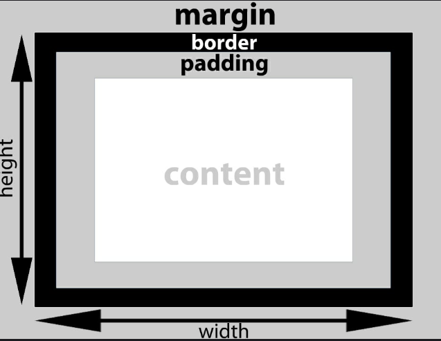

CSS Box Model
css, box model, height, css box model, css height, deepconclusions, data science, web development, website
Box Models
CSS box model is the foundataion of desing and layout of the web.
It is simply a box or a rectangular box.
Note!
Before we study and create CSS Layouts, we have to understand CSS box models first.
In CSS box model, each element is represented as a box with the following parts or properties
- Content: also called content box/area; it is the areawhere the content of the box is displayed
- padding: the space or area between the outer edge of the content box and the inner edge of the border; it is transparent.
- Border: the area between margin and the padding; its width, style and color can be changed
- Margin: the area or space outside the border or outside the CSS box; it is transparent
Each part or property is built up around another layer by layer.
To better understand the CSS box model. Here’s an illustration.
Example:
div {
padding: 20px;
border: 5px solid black;
margin: 40px;
}Output:
Width and Height of a CSS Box
To get the total width or height of a CSS Box, we have to use the following formulas.
CSS Box’s width = left border’s width + left padding’s width + content box’s width + right padding’s width + right border’s width CSS Box’s height = left border’s height + left padding’s height + content box’s height + right padding’s height + right border’s height
For example, if a <div> element has the following CSS declarations…
div {
width: 200px;
height: 200px;
padding: 50px;
border: 20px solid black;
}… its total width/height would then be 340px
CSS Box’s width = 20px (left border) + 50px (left padding) + 200px (content box’s width) + 50px (right padding) + 20px (right border) = 340px
CSS Box’s height = 20px (top border) + 50px (top padding) + 200px (content box’s height) + 50px (bottom padding) + 20px (bottom border) = 340px
You must have noticed that the width and height CSS properties only set the width/height of the content box not the entire CSS box:
Ins’t that annoying? Yes, in some cases.
Forexample if we only want a CSS Box to occupy the 50% of the width including the border and the padding.
To achieve something like that, we need the box-sizing CSS property be set to border-box.
div {
box-sizing: border-box;
width: 200px;
height: 200px;
padding: 50px;
border: 20px solid black;
}Result:
Now the final rendered width/height of the element is only 200px
It is because the padding and borders are already included inside teh 200px
Note!
It is highly recommended to use this approach in web design.
Here is the illustration of how it works.

CSS Box Terminologies:
- content box/area - the area where the content of the box is displayed
- padding box/area - the content area and the element’s padding combined
- border box/area - the padding area and the element’s borders combined
- margin box/area - the border area and the element’s margins combined
To be among the first to hear about future updates of the course materials, simply enter your email below, follow us on (formally Twitter), or subscribe to our YouTube channel.